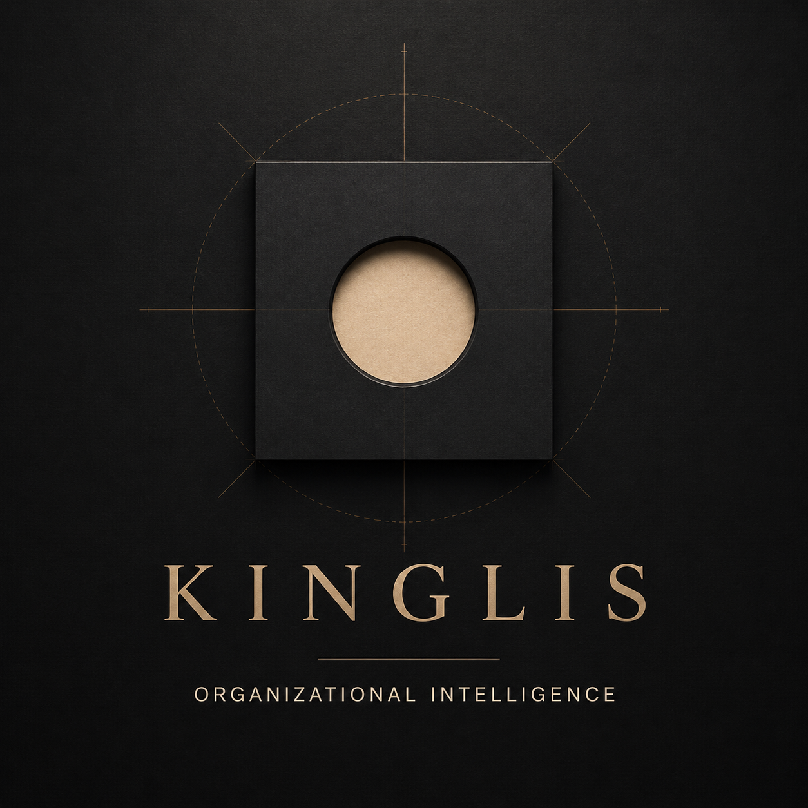

Every organizational outcome has a cause.
KINGLIS is an organizational intelligence company that transforms organizational evidence into executive intelligence through its proprietary platform, evidence-led solutions and strategic advisory, revealing the systems, decisions and behaviors that drive how organizations operate.
Explore the platformPLATFORM.
SOLUTIONS.
ADVISORY.
Organisations engage KINGLIS when...
- – Growth is becoming harder to sustain
- – Complexity is increasing faster than capability
- – Governance requires independent assessment
- – Technology is not producing the expected outcomes
- – Decision-making has slowed
- – Accountability has become unclear
- – Previous transformation has not solved the problem
- – Something feels fundamentally wrong, but nobody can explain why
KINGLIS combines three integrated capabilities that work together as a single organizational intelligence ecosystem.
KINGLIS Platform™
Our proprietary evidence-to-intelligence platform securely transforms organizational information into structured executive intelligence.
Solutions™
Evidence-led intelligence products that help organizations investigate specific questions through reviews, assessments and deep structural X-Rays.
Advisory™
Strategic partnerships that help founders and leadership teams design stronger governance, operating models and organizational capability. Together, these capabilities provide a disciplined approach to understanding organizations before changing them.
Understanding organizations before changing them.
Organizations are complex systems. Every decision, process, relationship and outcome emerges from an underlying organizational architecture.
When that architecture is not fully understood, organizations often respond to symptoms rather than the conditions producing them. Complexity increases, accountability weakens, decision-making slows and improvement efforts fail to achieve lasting results.
KINGLIS exists to change that.
We believe that better organizational decisions begin with better organizational understanding. Before redesigning structures, implementing technology or introducing change, organizations should first understand how they actually operate.
By transforming organizational evidence into executive intelligence, KINGLIS reveals the systems, decisions and behaviors that drive how organizations operate, providing leaders with the clarity needed to make confident, evidence-led decisions.
Perhaps the problem isn't the problem.
The architecture producing it may be..